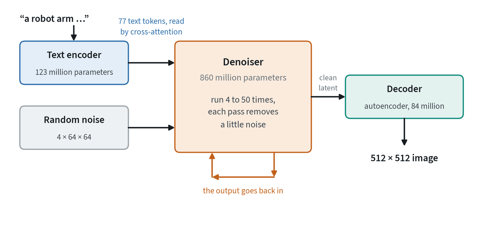
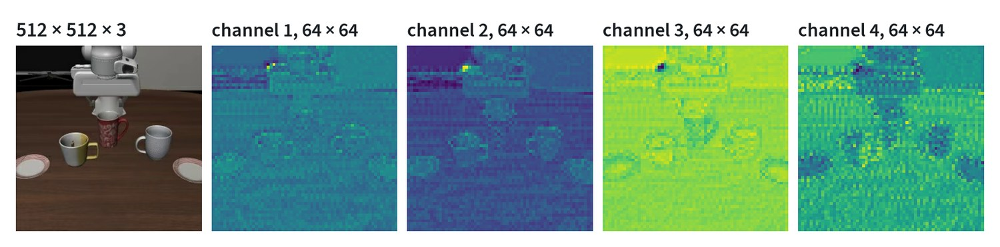
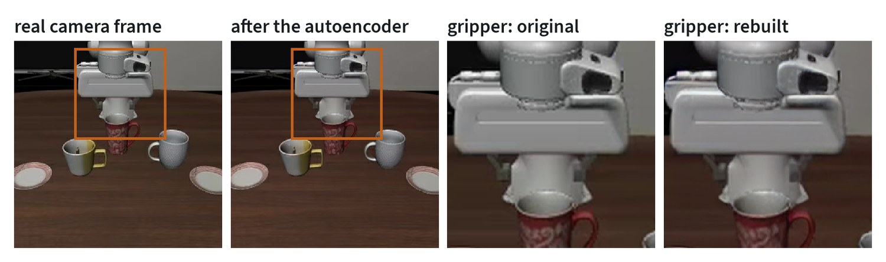
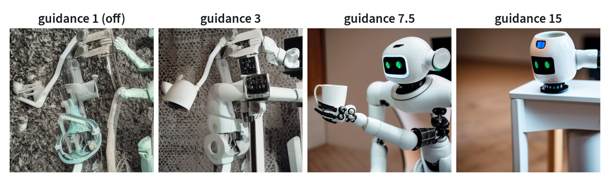
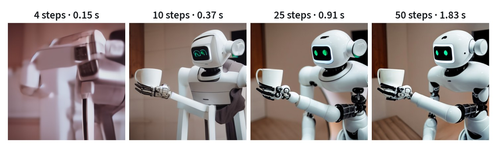

The other backbone
Vision-language models understand images. Diffusion models produce them. Stable Diffusion, released in 2022, is the model that made image generation fast and open enough for everyone to build on, and its design, called latent diffusion, is the template for the image and video generators that robotics now uses as its second backbone.
The generative modeling note explains how diffusion works in principle. This note takes one real model apart. Every image below was produced by running Stable Diffusion 1.5 for this note.
Three parts


- An autoencoder that compresses an image into a small grid of numbers, the latent, and rebuilds an image from one. It is trained first and then frozen.
- A text encoder that turns the prompt into a sequence of vectors. It is the text half of a CLIP model, also frozen.
- A denoiser that takes a noisy latent, the text vectors and the current noise level, and predicts the noise. It holds most of the parameters and is the only part trained for generation.
Generation runs the denoiser repeatedly on a latent that starts as pure noise, and decodes once at the end.
Why it works in a latent


The autoencoder shrinks each side of the image by eight and keeps four channels, a reduction of 48 times in the amount of data. The denoiser therefore works on a 64 × 64 grid instead of 512 × 512, and that is the whole reason the model can run on an ordinary graphics card.


The compression has a price, and this round trip shows it. The rebuilt frame scores 35.3 dB against the original, which is good, and the loss is concentrated in exactly the small, sharp detail a robot cares about: edges of fingers, thin parts, small text. Whatever the autoencoder cannot rebuild, the generator can never produce. Before building on any latent model, encode and decode real images from the target domain and look closely.
Generation, one step at a time

The latent starts as random numbers. At each step the denoiser estimates the noise present, and a small rule called the sampler removes part of it. Early steps decide the composition: where things are and roughly what they are. Late steps add texture and sharp edges. This is worth knowing because it tells you where a change will take effect. Changing the prompt late alters detail and leaves the layout alone.
The result is also a lesson in what the model knows. The prompt asked for a robot arm. The model drew a friendly humanoid, because that is what “robot” looks like in the images it learned from.
How the prompt gets in
The prompt is encoded once into 77 token vectors. Inside the denoiser, cross-attention layers let every position of the image latent read those vectors, so each region can attend to the words that concern it. The image is the queries and the text is the keys and values.


Reading the prompt is not enough to make the model follow it closely. Classifier-free guidance supplies the rest. At each step the denoiser is run twice, once with the prompt and once with an empty prompt, and the result is pushed further in the direction that separates the two:
prediction = unconditional + scale × ( conditional − unconditional )
A scale of 1 is no guidance. Values around 5 to 8 are typical. It costs a second pass at every step, and it trades variety for obedience.
Steps, time and quality


Each step is a full pass through the denoiser, twice with guidance, so time is proportional to steps: 0.15 seconds for 4 and 1.83 for 50 here. This model needs about 25. Four are not enough. Getting good results in very few steps takes a model trained for it, by distillation or with a flow-matching objective, and that is exactly the property a robot needs from a generator that runs inside a control loop.
What changed since
| Generation | Denoiser | Text encoder | Objective | What it added |
|---|---|---|---|---|
| Stable Diffusion 1.x | Convolutional U-Net with attention | CLIP text encoder | Predict the noise | Latent diffusion, openly released |
| SDXL | A larger U-Net | Two CLIP text encoders | Predict the noise | Higher resolution and better composition |
| Diffusion transformers | A transformer over latent patches | Varies | Diffusion or flow | Scales like a language model; no convolutions in the denoiser |
| Stable Diffusion 3, FLUX | A transformer with joint text and image attention | CLIP plus a large language-model encoder | Flow matching | Better prompt following and rendered text; fewer steps |
| Video models | A transformer over space and time | A large language-model encoder | Mostly flow matching | An autoencoder that also compresses time |
Three trends run through the table. The denoiser moved from convolutions to transformers. The objective moved from noise prediction to flow matching. And the text encoder grew, because how well a model follows a prompt is limited by how well it reads it.
Why robotics builds on it
A model that can generate plausible images has learned a good deal about how the world looks and, for video, how it moves. Robotics uses that in four ways.
- As a world model. A video generator conditioned on the robot’s actions predicts what the cameras will see next. The world models note covers this.
- As a policy backbone. World-action models start from a pretrained video generator and train it to produce actions together with future frames.
- As the method, not the model. Diffusion Policy and flow-matching action heads borrow the training recipe and apply it to action chunks, with no image generation involved.
- As a source of data. Image and video generators change backgrounds, lighting and objects in existing demonstrations.
The properties learned on this small model carry over directly. The autoencoder sets what can be represented, so fine contact detail is at risk. The number of steps sets whether it can run in real time. And the model’s idea of the world comes from its training images, which contained many pictures of robots and very few taken by one.
Common mistakes
- Skipping the autoencoder check. Encode and decode real frames from your domain before anything else.
- Raising guidance to fix everything. Past a point it damages the image without improving obedience.
- Assuming few steps will do. A model must be trained for few-step sampling. Otherwise quality falls off sharply.
- Reading generated video as physics. Plausible is not the same as correct.
Terms
- Latent diffusion
- Running the diffusion process in an autoencoder’s compressed space instead of on pixels.
- Latent
- The compressed representation of an image produced by the autoencoder.
- Denoiser
- The network that predicts the noise in a noisy latent.
- Sampler
- The rule that turns the denoiser’s prediction into the next, less noisy latent.
- Classifier-free guidance
- Exaggerating the difference between prompted and unprompted predictions to follow the prompt more closely.
- Diffusion transformer
- A denoiser built from transformer blocks over latent patches.
Further reading
- Rombach et al., 2021. High-Resolution Image Synthesis with Latent Diffusion Models.
- Ho et al., 2020. Denoising Diffusion Probabilistic Models.
- Song et al., 2020. Denoising Diffusion Implicit Models.
- Ho and Salimans, 2022. Classifier-Free Diffusion Guidance.
- Peebles and Xie, 2022. Scalable Diffusion Models with Transformers.
- Esser et al., 2024. Scaling Rectified Flow Transformers for High-Resolution Image Synthesis (Stable Diffusion 3).
- Blattmann et al., 2023. Stable Video Diffusion: Scaling Latent Video Diffusion Models to Large Datasets.
- Chi et al., 2023. Diffusion Policy: Visuomotor Policy Learning via Action Diffusion.